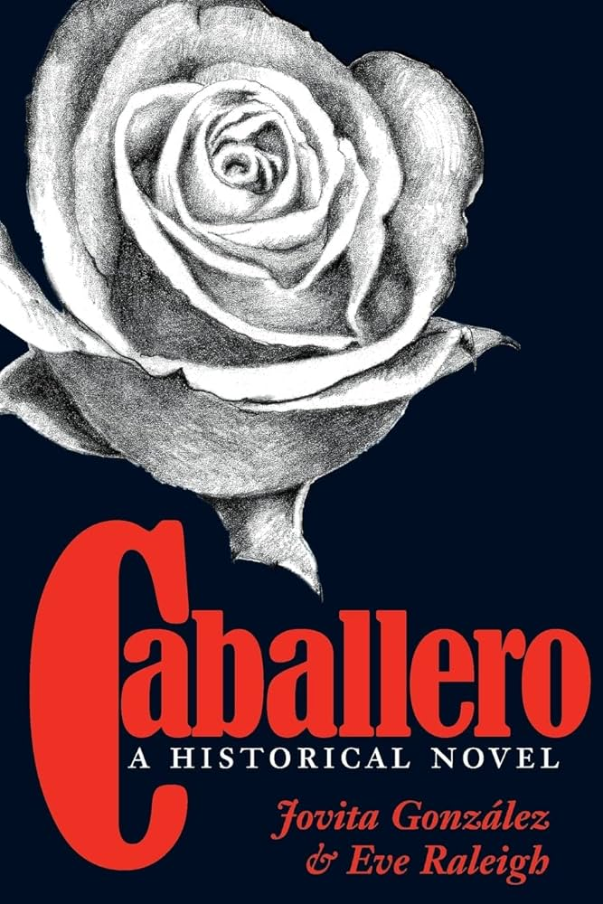
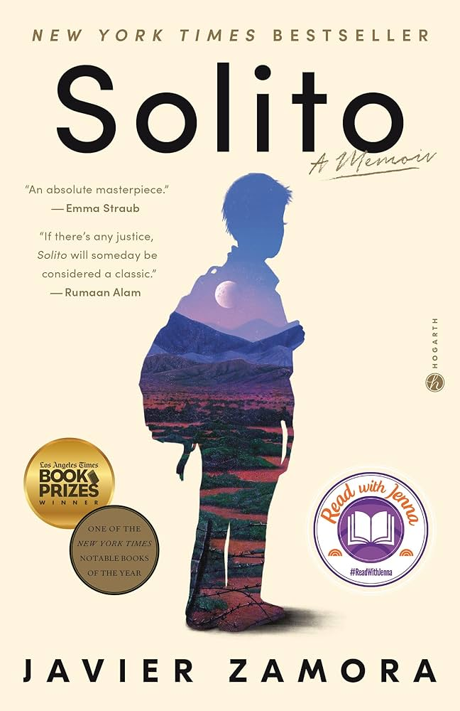
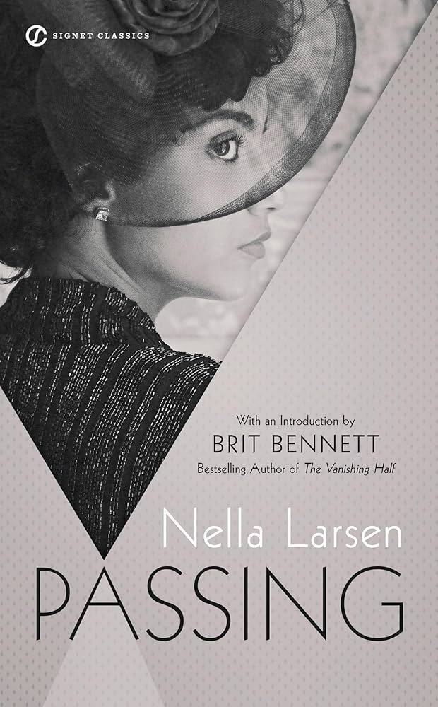
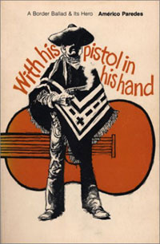
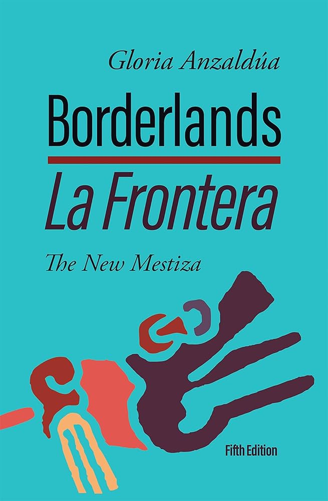
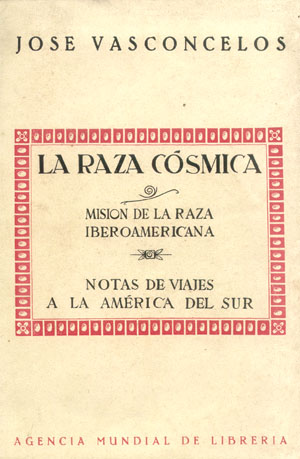

Ref
Archive & Sources
A compilation of the sources used in the creation of this site. Book titles are displayed above, while research links are below.
Primary Texts

Caballero
Solito
Passing
With His Pistol...
La Frontera
La Raza Cosmica
Treaty of Guadalupe Hidalgo
Operation Gatekeeper - DOJ
Gatekeeper - Clinton Library
Gatekeeper - Oxford Law
Establishing the Border
Wiki: Pistol in His Hand
Mexican-American War
Milestone Docs: 1848
Wiki: Américo Paredes
Education: 1848 Treaty
Wiki: New Mestiza
Wiki: La Raza Cósmica
Coat of Arms
Wiki: Caballero
Community Values